2.1 深度学习简介¶
学习目标
- 知道深度学习与机器学习的关系
- 知道神经网络是什么
- 知道常见的激活函数
- 知道参数初始化的常见方法
- 能够利用tf.keras构建神经网络模型
- 了解神经网络的优缺点
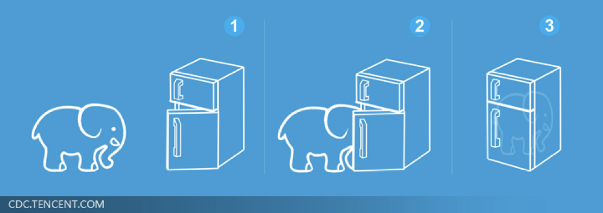
1 深度学习简介¶
在介绍深度学习之前，我们先看下这幅图：人工智能>机器学习>深度学习
深度学习是机器学习的一个子集，也就是说深度学习是实现机器学习的一种方法。与机器学习算法的主要区别如下图所示：
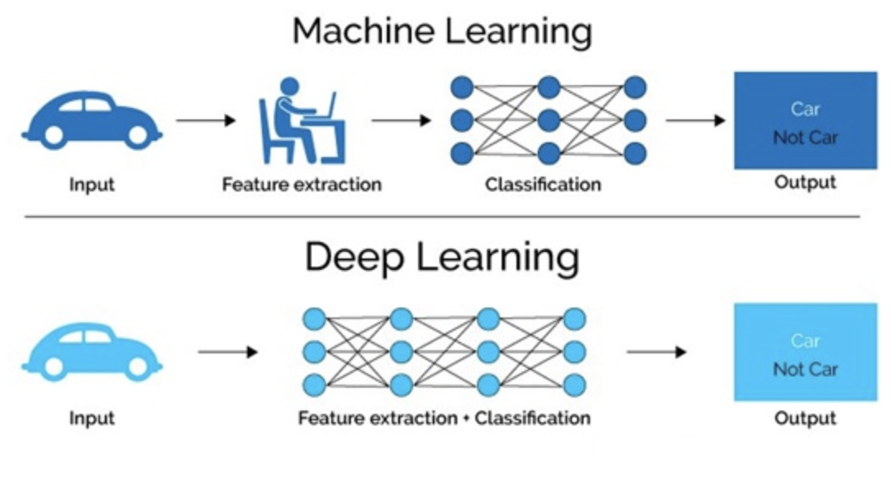
传统机器学习算术依赖人工设计特征，并进行特征提取，而深度学习方法不需要人工，而是依赖算法自动提取特征，这也是深度学习被看做黑盒子，可解释性差的原因。
随着计算机软硬件的飞速发展，现阶段通过**拥有众多层数神经网络(Neural Network)**来模拟人脑来解释数据，包括图像，文本，音频等内容。目前来看常用的神经网络包括：
- 卷积神经网络(Convolutional Neural Network)
- 循环神经网络(Recurrent Neural Network)
- 生成对抗网络(Generative Adversarial Networks)
- **深度强化学习(Deep Reinforcement Learning)**等。
2 什么是神经网络¶
人工神经网络（ Artificial Neural Network， 简写为ANN）也简称为神经网络（NN），是一种模仿生物神经网络结构和功能的 计算模型。人脑可以看做是一个生物神经网络，由众多的神经元连接而成。各个神经元传递复杂的电信号，树突接收到输入信号，然后对信号进行处理，通过轴突输出信号。下图是生物神经元示意图：
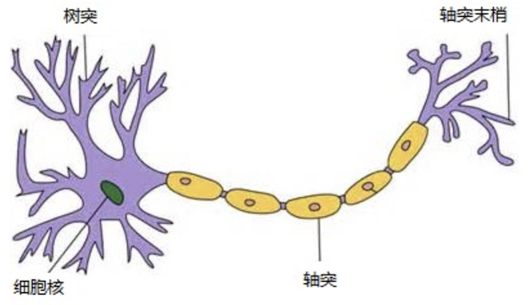
那怎么构建人工神经网络中的神经元呢？
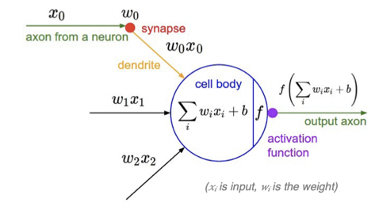
受生物神经元的启发，人工神经元接收来自其他神经元或外部源的输入，每个输入都有一个相关的权值(w)，它是根据该输入对当前神经元的重要性来确定的，对该输入加权并与其他输入求和后，经过一个激活函数f，计算得到该神经元的输出。
那接下来我们就利用神经元来构建神经网络，相邻层之间的神经元相互连接，并给每一个连接分配一个强度，如下图所示：
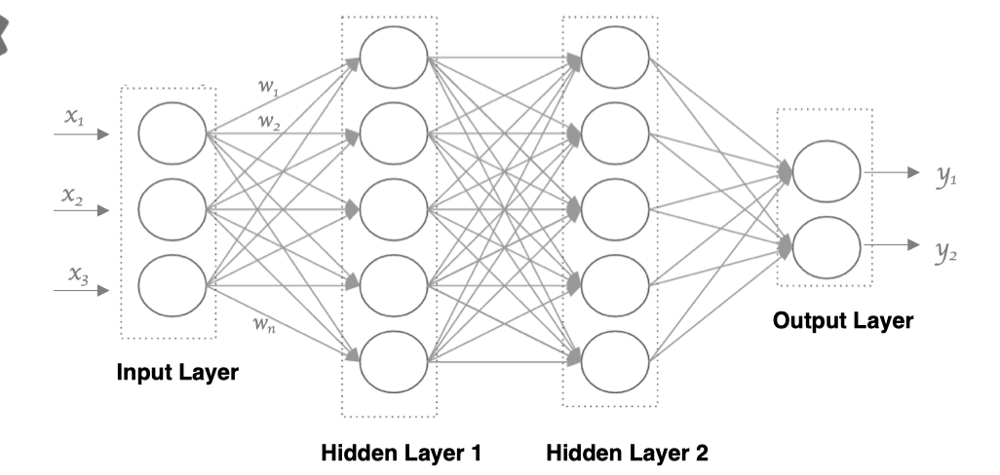
神经网络中信息只向一个方向移动，即从输入节点向前移动，通过隐藏节点，再向输出节点移动，网络中没有循环或者环。其中的基本构件是：
- 输入层：即输入x的那一层
- 输出层：即输出y的那一层
- 隐藏层：输入层和输出层之间都是隐藏层
特点是：
- 同一层的神经元之间没有连接。
- 第N层的每个神经元和第N-1层的所有神经元相连(这就是full connected的含义)，第N-1层神经元的输出就是第N层神经元的输入。
- 每个连接都有一个权值。
3 神经元是如何工作的？¶
人工神经元接收到一个或多个输入，对他们进行加权并相加，总和通过一个非线性函数产生输出。
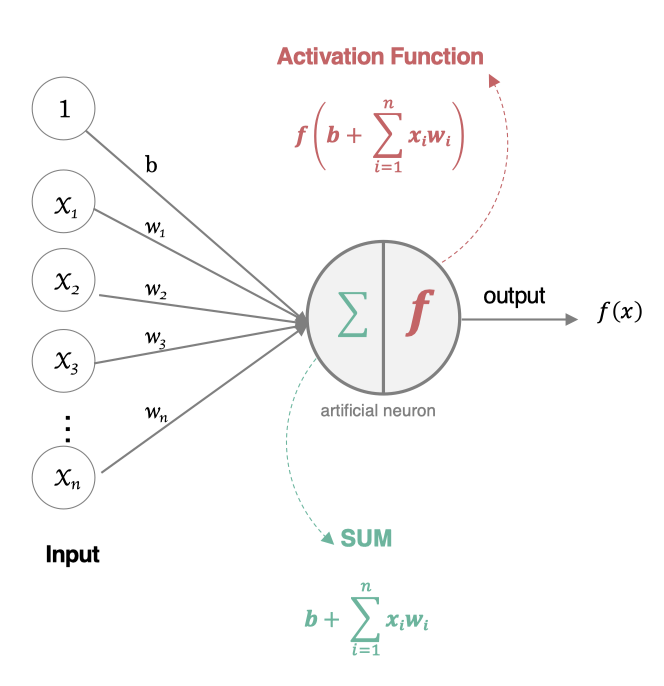
- 所有的输入xi，与相应的权重wi相乘并求和：
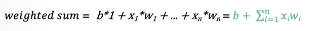
- 将求和结果送入到激活函数中，得到最终的输出结果：
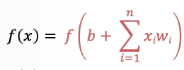
3.1 激活函数¶
在神经元中引入了激活函数，它的本质是向神经网络中引入非线性因素的，通过激活函数，神经网络就可以拟合各种曲线。如果不用激活函数，每一层输出都是上层输入的线性函数，无论神经网络有多少层，输出都是输入的线性组合，引入非线性函数作为激活函数，那输出不再是输入的线性组合，可以逼近任意函数。常用的激活函数有：
-
3.1.1.Sigmoid/logistics函数¶
数学表达式为：
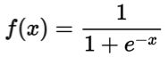
曲线如下图所示：
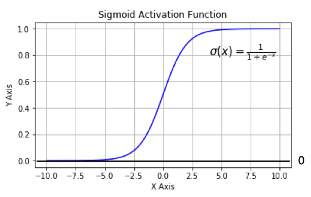
sigmoid 在定义域内处处可导，且两侧导数逐渐趋近于0。如果X的值很大或者很小的时候，那么函数的梯度（函数的斜率）会非常小，在反向传播的过程中，导致了向低层传递的梯度也变得非常小。此时，网络参数很难得到有效训练。这种现象被称为梯度消失。一般来说， sigmoid 网络在 5 层之内就会产生梯度消失现象。而且，该激活函数并不是以0为中心的，所以在实践中这种激活函数使用的很少。sigmoid函数一般只用于二分类的输出层。
实现方法：
# 导入相应的工具包
import tensorflow as tf
import tensorflow.keras as keras
import matplotlib.pyplot as plt
import numpy as np
# 定义x的取值范围
x = np.linspace(-10, 10, 100)
# 直接使用tensorflow实现
y = tf.nn.sigmoid(x)
# 绘图
plt.plot(x,y)
plt.grid()
输出结果为：
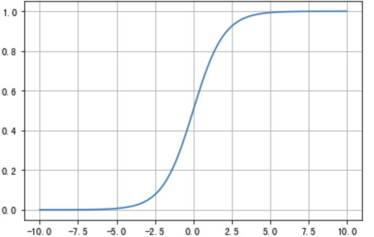
-
3.1.2.tanh(双曲正切曲线)¶
数学表达式如下：
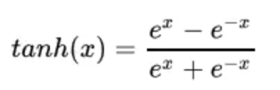
曲线如下图所示：

tanh也是一种非常常见的激活函数。与sigmoid相比，它是以0为中心的，使得其收敛速度要比sigmoid快，减少迭代次数。然而，从图中可以看出，tanh两侧的导数也为0，同样会造成梯度消失。
若使用时可在隐藏层使用tanh函数，在输出层使用sigmoid函数。
实现方法为：
# 导入相应的工具包
import tensorflow as tf
import tensorflow.keras as keras
import matplotlib.pyplot as plt
import numpy as np
# 定义x的取值范围
x = np.linspace(-10, 10, 100)
# 直接使用tensorflow实现
y = tf.nn.tanh(x)
# 绘图
plt.plot(x,y)
plt.grid()
绘制结果为：
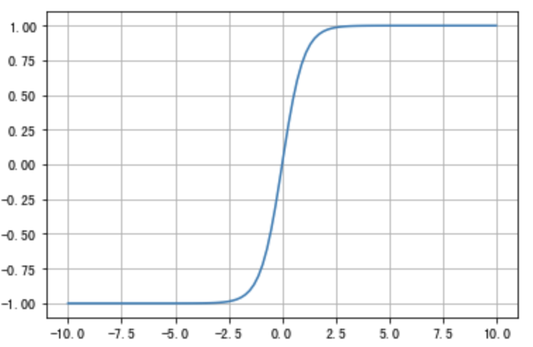
-
3.1.3.RELU¶
数学表达式为：
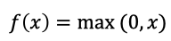
曲线如下图所示：
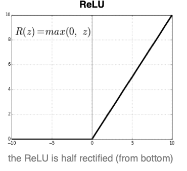
ReLU是目前最常用的激活函数。 从图中可以看到，当x<0时，ReLU导数为0，而当x>0时，则不存在饱和问题。所以，ReLU 能够在x>0时保持梯度不衰减，从而缓解梯度消失问题。然而，随着训练的推进，部分输入会落入小于0区域，导致对应权重无法更新。这种现象被称为“神经元死亡”。
与sigmoid相比，RELU的优势是：
- 采用sigmoid函数，计算量大（指数运算），反向传播求误差梯度时，求导涉及除法，计算量相对大，而采用Relu激活函数，整个过程的计算量节省很多。
- sigmoid函数反向传播时，很容易就会出现梯度消失的情况，从而无法完成深层网络的训练。
- Relu会使一部分神经元的输出为0，这样就造成了网络的稀疏性，并且减少了参数的相互依存关系，缓解了过拟合问题的发生。
实现方法为：
# 导入相应的工具包
import tensorflow as tf
import tensorflow.keras as keras
import matplotlib.pyplot as plt
import numpy as np
# 定义x的取值范围
x = np.linspace(-10, 10, 100)
# 直接使用tensorflow实现
y = tf.nn.relu(x)
# 绘图
plt.plot(x,y)
plt.grid()
绘制结果为：
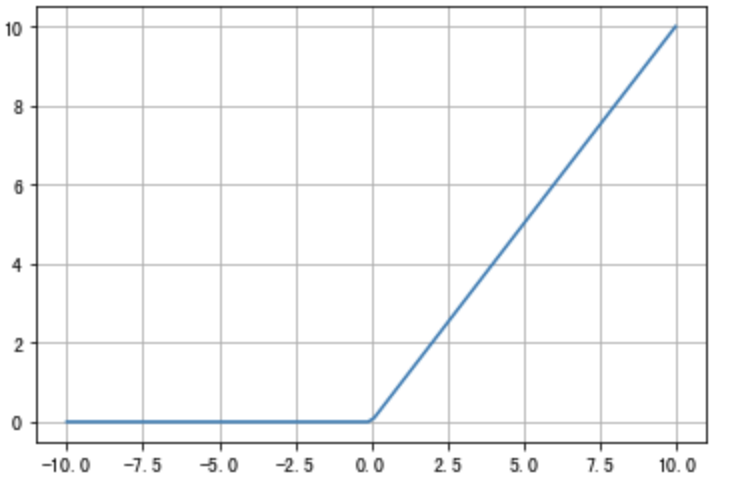
-
3.1.4.LeakReLu¶
该激活函数是对RELU的改进，数学表达式为：
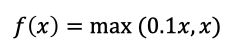
曲线如下所示：
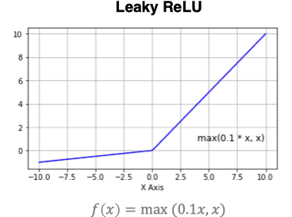
实现方法为：
# 导入相应的工具包
import tensorflow as tf
import tensorflow.keras as keras
import matplotlib.pyplot as plt
import numpy as np
# 定义x的取值范围
x = np.linspace(-10, 10, 100)
# 直接使用tensorflow实现
y = tf.nn.leaky_relu(x)
# 绘图
plt.plot(x,y)
plt.grid()
-
3.1.5. SoftMax¶
softmax用于多分类过程中，它是二分类函数sigmoid在多分类上的推广，目的是将多分类的结果以概率的形式展现出来。
计算方法如下图所示：
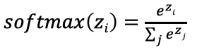
使用方法：
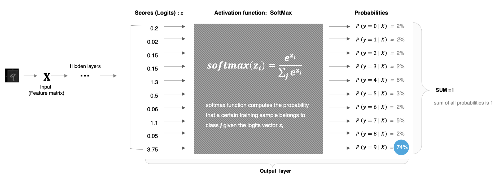
softmax直白来说就是将网络输出的logits通过softmax函数，就映射成为(0,1)的值，而这些值的累和为1（满足概率的性质），那么我们将它理解成概率，选取概率最大（也就是值对应最大的）接点，作为我们的预测目标类别。
实现，以上图中数字9的分类结果为例给大家进行演示：
# 导入相应的工具包
import tensorflow as tf
import tensorflow.keras as keras
import matplotlib.pyplot as plt
import numpy as np
# 数字中的score
x = tf.constant([0.2,0.02,0.15,1.3,0.5,0.06,1.1,0.05,3.75])
# 将其送入到softmax中计算分类结果
y = tf.nn.softmax(x)
# 将结果进行打印
print(y)
分类结果为：
tf.Tensor(
[0.02167152 0.01810157 0.02061459 0.06510484 0.02925349 0.01884031
0.05330333 0.01865285 0.75445753], shape=(9,), dtype=float32)
3.1.6. 其他激活函数¶
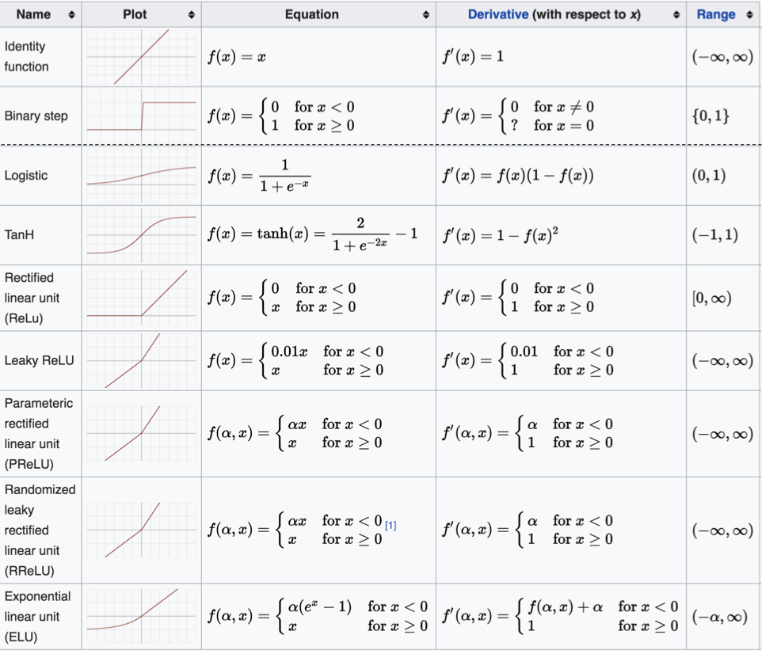
3.1.7.如何选择激活函数¶
隐藏层¶
- 优先选择RELU激活函数
- 如果ReLu效果不好，那么尝试其他激活，如Leaky ReLu等。
- 如果你使用了Relu， 需要注意一下Dead Relu问题， 避免出现大的梯度从而导致过多的神经元死亡。
- 不要使用sigmoid激活函数，可以尝试使用tanh激活函数
输出层¶
- 二分类问题选择sigmoid激活函数
- 多分类问题选择softmax激活函数
- 回归问题选择identity激活函数
3.2 参数初始化¶
对于某一个神经元来说，需要初始化的参数有两类：一类是权重W，还有一类是偏置b,偏置b初始化为0即可。而权重W的初始化比较重要，我们着重来介绍常见的初始化方式。
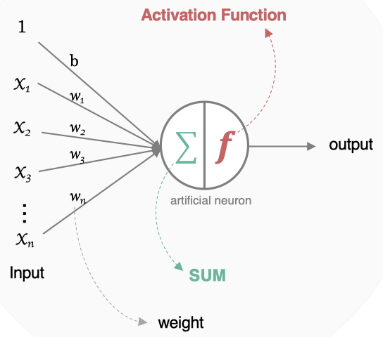
3.2.1.随机初始化¶
随机初始化从均值为0，标准差是1的高斯分布中取样，使用一些很小的值对参数W进行初始化。
3.2.2.标准初始化¶
权重参数初始化从区间均匀随机取值。即在(-1/√d,1/√d)均匀分布中生成当前神经元的权重，其中d为每个神经元的输入数量。
3.2.3.Xavier初始化¶
该方法的基本思想是各层的激活值和梯度的方差在传播过程中保持一致，也叫做Glorot初始化。在tf.keras中实现的方法有两种：
- 正态化Xavier初始化：
Glorot 正态分布初始化器，也称为 Xavier 正态分布初始化器。它从以 0 为中心，标准差为 stddev = sqrt(2 / (fan_in + fan_out)) 的正态分布中抽取样本， 其中 fan_in 是输入神经元的个数， fan_out 是输出的神经元个数。
实现方法为：
# 导入工具包
import tensorflow as tf
# 进行实例化
initializer = tf.keras.initializers.glorot_normal()
# 采样得到权重值
values = initializer(shape=(9, 1))
# 打印结果
print(values)
输出结果为：
tf.Tensor(
[[ 0.71967787]
[ 0.56188506]
[-0.7327265 ]
[-0.05581591]
[-0.05519835]
[ 0.11283273]
[ 0.8377778 ]
[ 0.5832906 ]
[ 0.10221979]], shape=(9, 1), dtype=float32)
- 标准化Xavier初始化
Glorot 均匀分布初始化器，也称为 Xavier 均匀分布初始化器。它从 [-limit，limit] 中的均匀分布中抽取样本， 其中 limit 是 sqrt(6 / (fan_in + fan_out))， 其中 fan_in 是输入神经元的个数， fan_out 是输出的神经元个数。
# 导入工具包
import tensorflow as tf
# 进行实例化
initializer = tf.keras.initializers.glorot_uniform()
# 采样得到权重值
values = initializer(shape=(9, 1))
# 打印结果
print(values)
输出结果为：
tf.Tensor(
[[-0.59119344]
[ 0.06239486]
[ 0.65161395]
[-0.30347362]
[-0.5407096 ]
[ 0.35138106]
[ 0.41150713]
[ 0.32143414]
[-0.57354397]], shape=(9, 1), dtype=float32)
3.2.4.He初始化¶
he初始化，也称为Kaiming初始化，出自大神何恺明之手，它的基本思想是正向传播时，激活值的方差保持不变；反向传播时，关于状态值的梯度的方差保持不变。在tf.keras中也有两种：
- 正态化的he初始化
He 正态分布初始化是以 0 为中心，标准差为 stddev = sqrt(2 / fan_in) 的截断正态分布中抽取样本， 其中 fan_in是输入神经元的个数，在tf.keras中的实现方法为：
# 导入工具包
import tensorflow as tf
# 进行实例化
initializer = tf.keras.initializers.he_normal()
# 采样得到权重值
values = initializer(shape=(9, 1))
# 打印结果
print(values)
输出结果为：
tf.Tensor(
[[-0.1488019 ]
[-0.12102155]
[-0.0163257 ]
[-0.36920077]
[-0.89464396]
[-0.28749225]
[-0.5467023 ]
[ 0.27031776]
[-0.1831588 ]], shape=(9, 1), dtype=float32)
- 标准化的he初始化
He 均匀方差缩放初始化器。它从 [-limit，limit] 中的均匀分布中抽取样本， 其中 limit 是 sqrt(6 / fan_in)， 其中 fan_in 输入神经元的个数。实现为：
# 导入工具包
import tensorflow as tf
# 进行实例化
initializer = tf.keras.initializers.he_uniform()
# 采样得到权重值
values = initializer(shape=(9, 1))
# 打印结果
print(values)
输出结果为：
tf.Tensor(
[[ 0.80033934]
[-0.18773115]
[ 0.6726284 ]
[-0.23672342]
[-0.6323329 ]
[ 0.6048162 ]
[ 0.1637358 ]
[ 0.60797024]
[-0.46316862]], shape=(9, 1), dtype=float32)
4 神经网络的搭建¶
接下来我们来构建如下图所示的神经网络模型：
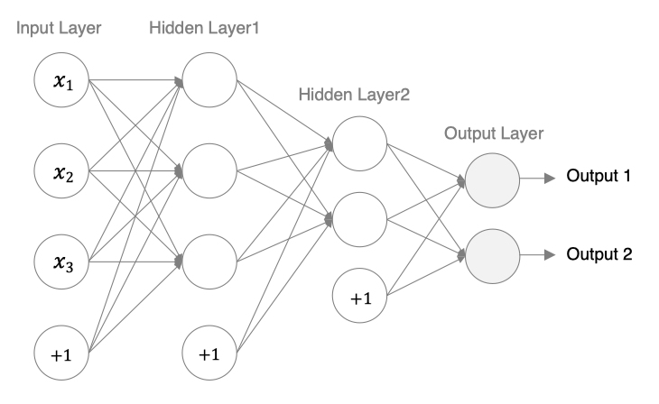
tf.Keras中构建模有两种方式，一种是通过Sequential构建，一种是通过Model类构建。前者是按一定的顺序对层进行堆叠，而后者可以用来构建较复杂的网络模型。首先我们介绍下用来构建网络的全连接层：
tf.keras.layers.Dense(
units, activation=None, use_bias=True, kernel_initializer='glorot_uniform',
bias_initializer='zeros')
主要参数：
- units: 当前层中包含的神经元个数
- Activation: 激活函数，relu,sigmoid等
- use_bias: 是否使用偏置，默认使用偏置
- Kernel_initializer: 权重的初始化方式，默认是Xavier初始化
- bias_initializer: 偏置的初始化方式，默认为0
4.1通过Sequential构建¶
Sequential() 提供一个层的列表，就能快速地建立一个神经网络模型，实现方法如下所示：
# 导入相关的工具包
import tensorflow as tf
from tensorflow import keras
from tensorflow.keras import layers
# 定义一个Sequential模型，包含3层
model = keras.Sequential(
[
# 第一层：激活函数为relu,权重初始化为he_normal
layers.Dense(3, activation="relu",
kernel_initializer="he_normal", name="layer1",input_shape=(3,)),
# 第二层：激活函数为relu,权重初始化为he_normal
layers.Dense(2, activation="relu",
kernel_initializer="he_normal", name="layer2"),
# 第三层（输出层）：激活函数为sigmoid,权重初始化为he_normal
layers.Dense(2, activation="sigmoid",
kernel_initializer="he_normal", name="layer3"),
],
name="my_Sequential"
)
接下来我们使用：
# 展示模型结果
model.summary()
如下所示：
Model: "my_Sequential"
_________________________________________________________________
Layer (type) Output Shape Param #
=================================================================
layer1 (Dense) (None, 3) 12
_________________________________________________________________
layer2 (Dense) (None, 2) 8
_________________________________________________________________
layer3 (Dense) (None, 2) 6
=================================================================
Total params: 26
Trainable params: 26
Non-trainable params: 0
_________________________________________________________________
通过这种sequential的方式只能构建简单的序列模型，较复杂的模型没有办法实现。
4.2 利用function API构建¶
tf.keras 提供了 Functional API，建立更为复杂的模型，使用方法是将层作为可调用的对象并返回张量，并将输入向量和输出向量提供给 tf.keras.Model 的 inputs 和 outputs 参数，实现方法如下：
# 导入工具包
import tensorflow as tf
# 定义模型的输入
inputs = tf.keras.Input(shape=(3,),name = "input")
# 第一层：激活函数为relu，其他默认
x = tf.keras.layers.Dense(3, activation="relu",name = "layer1")(inputs)
# 第二层：激活函数为relu，其他默认
x = tf.keras.layers.Dense(2, activation="relu",name = "layer2")(x)
# 第三层（输出层）：激活函数为sigmoid
outputs = tf.keras.layers.Dense(2, activation="sigmoid",name = "layer3")(x)
# 使用Model来创建模型，指明输入和输出
model = tf.keras.Model(inputs=inputs, outputs=outputs,name="my_model")
同样通过：
# 展示模型结果
model.summary()
结果如下所示：
Model: "my_model"
_________________________________________________________________
Layer (type) Output Shape Param #
=================================================================
input (InputLayer) [(None, 3)] 0
_________________________________________________________________
layer1 (Dense) (None, 3) 12
_________________________________________________________________
layer2 (Dense) (None, 2) 8
_________________________________________________________________
layer3 (Dense) (None, 2) 6
=================================================================
Total params: 26
Trainable params: 26
Non-trainable params: 0
_________________________________________________________________
另外也可以通过：
# 模型展示
keras.utils.plot_model(model,show_shapes=True)
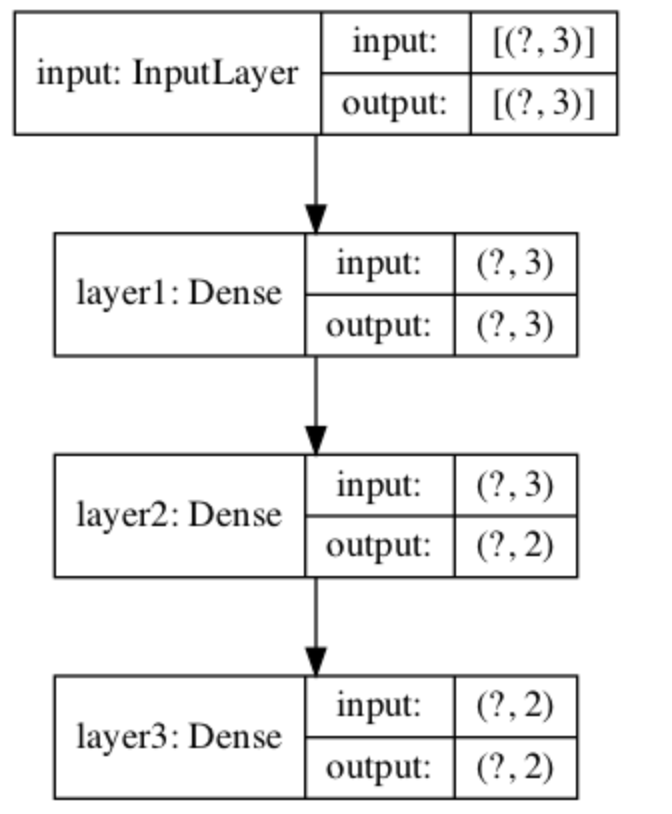
4.3 通过model的子类构建¶
通过model的子类构建模型，此时需要在__init__中定义神经网络的层，在call方法中定义网络的前向传播过程，实现方法如下：
# 导入工具包
import tensorflow as tf
# 定义model的子类
class MyModel(tf.keras.Model):
# 在init方法中定义网络的层结构
def __init__(self):
super(MyModel, self).__init__()
# 第一层：激活函数为relu,权重初始化为he_normal
self.layer1 = tf.keras.layers.Dense(3, activation="relu",
kernel_initializer="he_normal", name="layer1",input_shape=(3,))
# 第二层：激活函数为relu,权重初始化为he_normal
self.layer2 =tf.keras.layers.Dense(2, activation="relu",
kernel_initializer="he_normal", name="layer2")
# 第三层（输出层）：激活函数为sigmoid,权重初始化为he_normal
self.layer3 =tf.keras.layers.Dense(2, activation="sigmoid",
kernel_initializer="he_normal", name="layer3")
# 在call方法中万完成前向传播
def call(self, inputs):
x = self.layer1(inputs)
x = self.layer2(x)
return self.layer3(x)
# 实例化模型
model = MyModel()
# 设置一个输入，调用模型（否则无法使用summay()）
x = tf.ones((1, 3))
y = model(x)
同样的我们也可以通过summay方法来查看模型构建的结果
5 神经网络的优缺点¶
1.优点¶
- 精度高，性能优于其他的机器学习方法，甚至在某些领域超过了人类
- 可以近似任意的非线性函数
- 随之计算机硬件的发展，近年来在学界和业界受到了热捧，有大量的框架和库可供调用
2.缺点¶
- 黑箱，很难解释模型是怎么工作的
- 训练时间长，需要大量的计算力
- 网络结构复杂，需要调整超参数
- 小数据集上表现不佳，容易发生过拟合
总结
- 知道深度学习与机器学习的关系
深度学习是机器学习的一个子集，主要区别在是否包含特征工程
- 知道神经网络是什么
一种模仿生物神经网络结构和功能的 计算模型
- 知道常见的激活函数
默认使用relu，二分类是sigmoid, 多分类是softmaxs
- 知道参数初始化的常见方法
随机初始化，标准初始化，Xavier初始化，He初始化
- 能够利用tf.keras构建神经网络模型
Sequential的方法，Model的函数式编程，构建model的子类实现
- 了解神经网络的优缺点